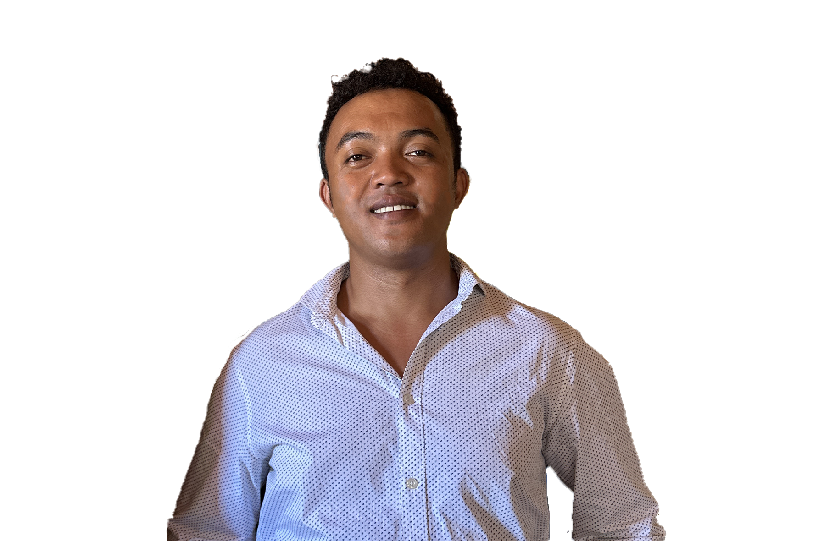

Passionné par la technologie, en constante évolution — maîtrisant Python, le web, et les télécommunications, avec une sensibilité pour l'efficacité et la rigueur.

// compétences techniques
// langues parlées
// parcours académique
Apprentissage de la langue allemande, visant le niveau B1 du cadre européen commun de référence pour les langues.
Certification professionnelle dans le domaine des télécommunications, couvrant les fondamentaux des réseaux et des systèmes de communication modernes.
Formation supérieure en informatique couvrant le développement logiciel, les bases de données, les réseaux et la programmation orientée objet.
Diplôme du baccalauréat dans la filière industrielle, avec une orientation technique et scientifique appliquée.
// parcours professionnel
Étude de la conception mécanique de robots et initiation au logiciel de CAO SolidWorks. Réalisation d'un projet de modélisation 3D : conception et assemblage de pièces mécaniques, simulation de mouvements et mise en plan technique.
Transport et accompagnement lors d'événements professionnels et privés. Ponctualité, discrétion et sens du service client au cœur de la mission.
Service de transport de passagers avec un sens élevé de la responsabilité et de la fiabilité. Gestion des itinéraires et relation client.
Stage en développement informatique au sein de l'entreprise 4D Blueline. Participation à des projets de développement, découverte de l'environnement professionnel IT et mise en pratique des compétences acquises.
// contact
Je suis ouvert aux opportunités professionnelles, aux collaborations et aux nouveaux projets. N'hésitez pas à me contacter !